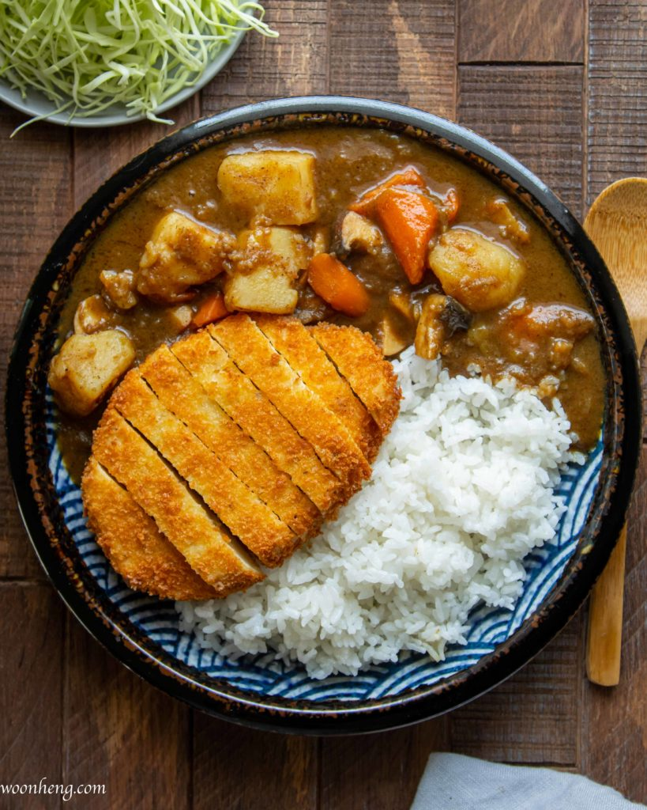

Tofu Katsu with Japanese Brown Curry

Description
I was feeling adventurous when I tried this recipe! If you choose to make your own roux it can be very time
consuming. Alternatively you can buy a premade roux at your local asian market. The benefit to making it on
your own is that you can choose how dark you want your curry to be. I like mine dark, because it reminds me
of some of the curries I tried when I traveled to Japan in high school. Either way, I'm sure you'll find this
recipe to be delicious!
Ingredients
Tofu Katsu
- 1 16 oz package firm tofu, drained and frozen (freezing is important to get a 'meat-like' texture on the tofu)
- 1/4 c flour
- 1/4 c egg substitute (we like aquafaba as a binding agent)
- 1/2 c panko bread crumbs (MUST be panko. Italian bread crumbs won't give that iconic katsu texture)
- salt and pepper
Curry Roux
- 3 tbsp plant-based butter
- 4 tbsp flour
- 1 1/2 tbsp curry powder
- 1 tbsp garam masala
- 1/2 tsp cayenne pepper
Japanese Curry
- 1 lb potatoes, peeled and cubed
- 2 medium carrots, chopped (try to keep size consistent with the potatos)
- 4 c veggie stock
- 1 large onion, finely chopped
- 1 small fuji apple, peeled, and roughly chopped
- 1 tbsp soy sauce
- 1/2 tbsp honey, or your preferred sweetener (skip if you want a less sweet curry, or if you have a particularly large apple)
- Option to add additional vegatables/mushrooms. A good hearty king oyster mushroom works well
Steps
Note: there are a lot of steps here. I recommend focusing on the roux first if making your own.
Then, if you're a good multi-tasker, prep everything and while the curry is cooking,
you can fry up your tofu. If that seems like too much to handle, make the tofu first. You can
reheat in the microwave/oven once the curry is ready.
Making the Roux
- Melt the butter in a pot over medium-low heat, then whisk in the flour
- Stir continuously as the mixture begins to brown. This process should take roughly 10-12 mins. Be careful not to burn
- Once browned to your liking, add your spices and stir to combine. Remove from heat and refrigerate if not using immediately
Making the Tofu Katsu
- Once tofu has thawed, squeeze gently between your hands to remove excess moisture
- Cut 'hamburger style' into 2 large slabs. Season both sides with salt and pepper
- Set up your dipping station with 3 bowls/plates, flour, egg substitute, and panko. Season the flour and panko as desired
- Dip the tofu first in flour, then egg substitute, then panko. Be sure to coat generously with panko
- Heat 1/2 inch neutral oil in a skillet over medium heat. You'll know it's hot when you drop a breadcrumb in the oil and it sizzles
- Place tofu in the hot oil and fry on both sides. When frying, always place the tofu away from your body to avoid splash back
- Tofu will be ready when it is golden brown on each side. Try to only flip once, and lower the heat if it's browning too quickly. Should only take a few mins each sides
- When done, place on a draining rack. Do not move directly to a plate unless ready to eat as panko will get soggy
Making the Curry
- If using mushrooms, saute in a dutch oven over medium heat then transfer to a plate
- Saute onions until carmelized
- Add carrots, potatoes, and mushrooms back to the onions and cook for another minutes or two
- Add veggie stock, bring to a boil then add a lid and reduce heat to let it simmer
- Check potatos with a chopstick/fork periodically. It's ready when the potatoes give no resistance
- When the curry cooks, puree the apple
- When potatoes are done, add soy sauce, apple, sweetener, and season to taste
- Stir the roux into the curry. If you have one, using a sieve helps evenly distribute
- Serve over rice with the tofu katsu and enjoy!
Additional Notes
- Sweetness is a hallmark of a good japanese curry! Not too sweet, but it deserves a seat at the table with the other flavors
- If making your own roux, feel free to increase the measurements and save some for later! It will save you time and a good homemmade roux is hard to beat!